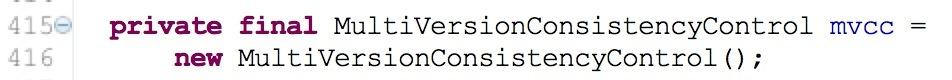
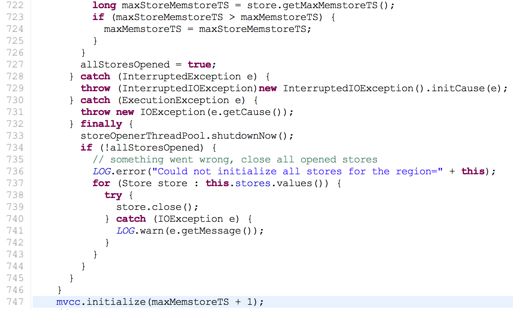
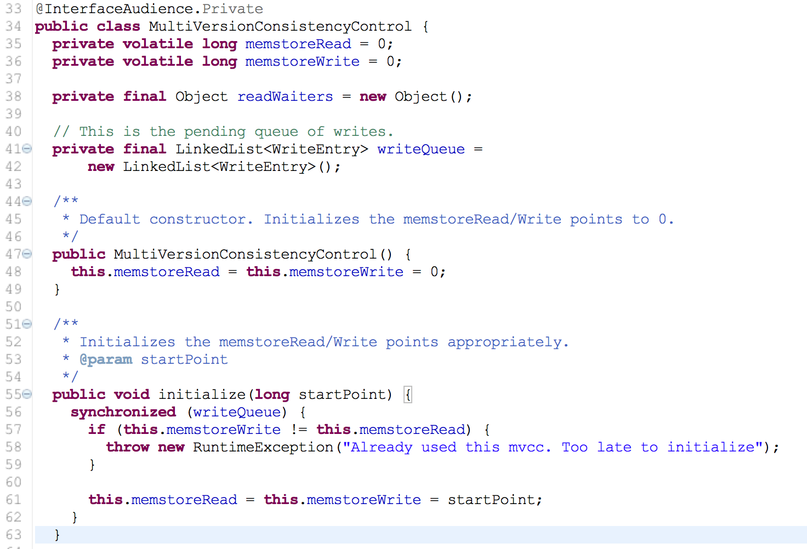
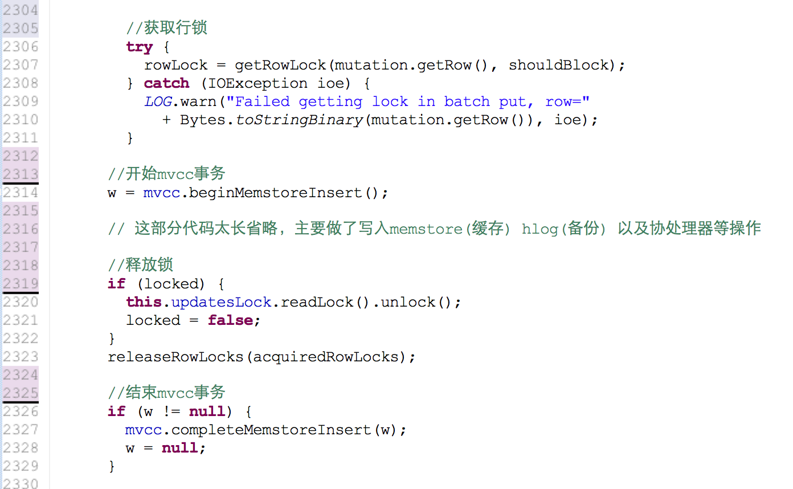
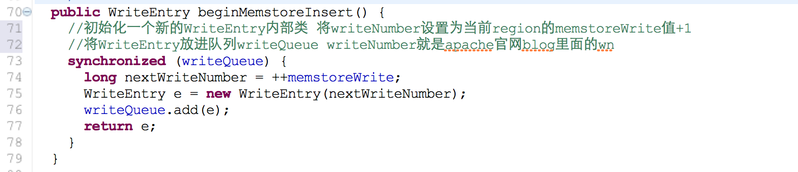
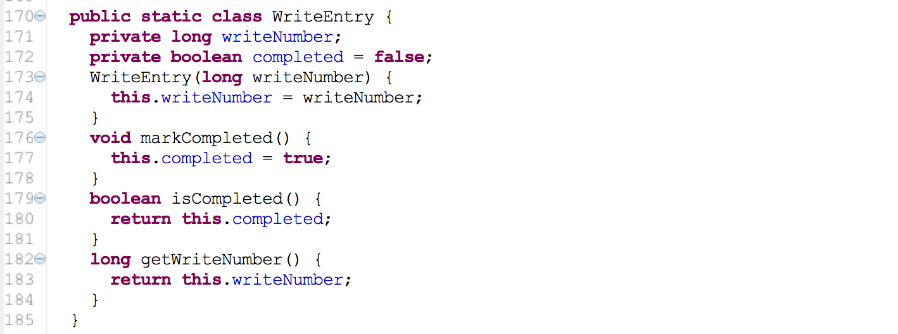
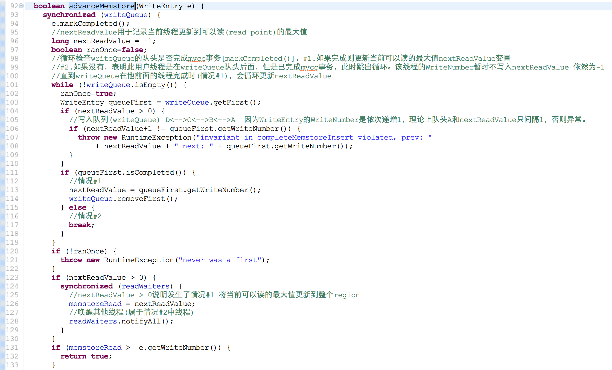
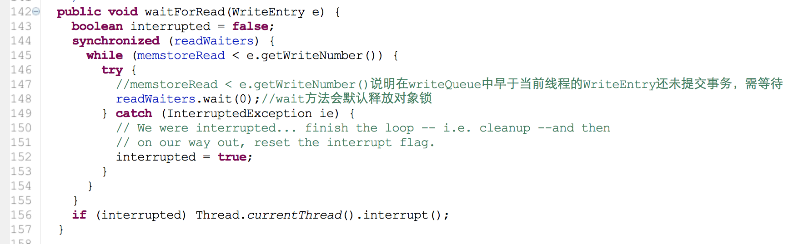
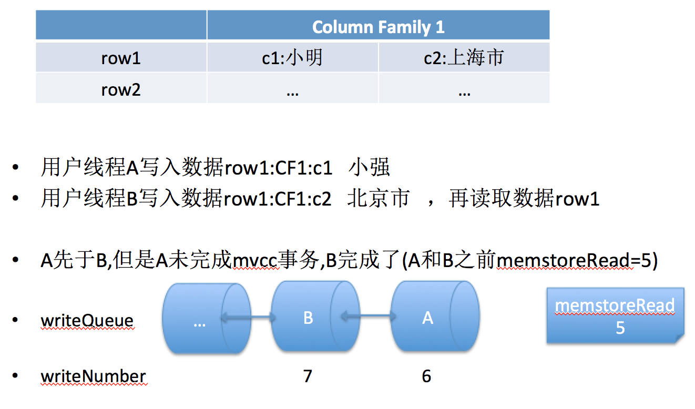
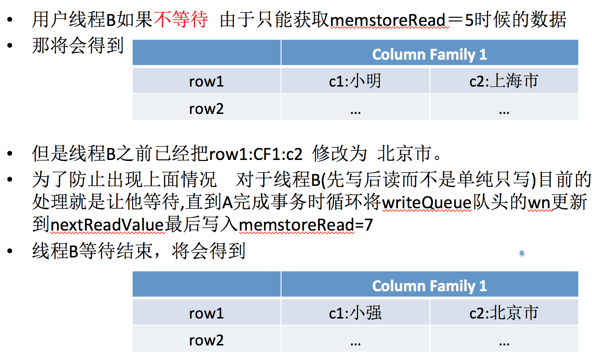

mvcc主要是在读写并发时通过设置数据时间版本不阻塞，很多数据库包括mysql oracle等都应用这一原理，实现上有所不同。 hbase mvcc apache官网对其原理作了详细描述: https://blogs.apache.org/hbase/entry/apache_hbase_internals_locking_and 下面分析是基于apache的0.98.1版本：
region server 在打开region时会初始化一个mvcc变量(HRegion类变量)，整个mvcc是控制在该region范围。  初始化：遍历HRegion所有的HStore的maxMemstoreTS 取出其中的最大值并+1作为当前的读写点  mvcc 是使用时间戳TS(timestamp)来控制读写， 前面HStore的maxMemstoreTS跟实际数据KV的mvcc值以及MultiVersionConsistencyControl的memstoreRead和memstoreWrite都是同一性质，只是在描述上有所不同，以前的hbase版本中类MultiVersionConsistencyControl叫ReadWriteConsistencyControl(有的用TS，有的用mvcc 代码没有统一)，  用户写数据(PUT) 最终会调用HRegionServer的mutate方法-->HRgion的batchMutate方法，然后会做部分操作(循环竞争行锁)-->doMiniBatchMutation(此方法较长，省略部分代码)  1. 首先写操作(e.g. 用户A)获得行锁，用户B对此行数据的更改操作则会阻塞 2. 用户A获得行锁后调用beginMemstoreInsert开始初始化mvcc  MultiVersionConsistencyControl的内部类WriteEntry  3. 用户A写数据完成后释放行锁，用户B可以开始写操作，注意此时用户A在释放行锁前并没有完成mvcc事务 4. 用户A结束mvcc事务操作  writeQueue中非队头已完成mvcc的线程(上面情况#2)需等待  上面线程(情况#2)为什么会需要等待  